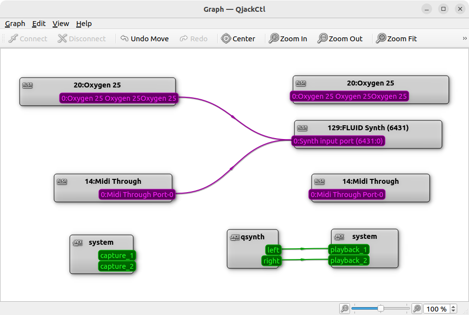

Для связывания MIDI-устройств понадобится утилита:
aconnectgui
Это программа, которая имеет графический интерфейс, в котором перечислены все устройства, имеющие отошение к MIDI. Между этими устройствами возможно совершение двух действий: связывание, и разрыв связи. Связывать, естественно, можно только выход и вход (обозначаются треугольничками: > -это выход, < - это вход). Для связывания надо выбрать соответсвующий инструмент с иконкой в виде двух джеков, соединенных проводом, кликнуть на выход, и не отпуская клавишу мышки, перетянуть указатель на вход.
Интерфейс выглядит так:
Особенность данной программы в том, что в ней нет адекватной возможности динамически перечитывать появляющиеся в системе устройства. Иногда устройства динамически перечитываются. Иногда - нет. Поэтому при каждом подключении устройства или при запуске MIDI-программы или плагина, данную программу иногда перезапускать, чтобы она отобразила новые устройства.
Вообще, у данной программы есть консольный дубликат - консольная утилита aconnect. Через нее можно смотреть наличие MIDI-устройств:
> aconnect -i
client 0: 'System' [type=kernel]
0 'Timer '
1 'Announce '
client 14: 'Midi Through' [type=kernel]
0 'Midi Through Port-0'
client 130: 'VMPK Output' [type=user,pid=25149]
0 'out '
> aconnect -o
client 14: 'Midi Through' [type=kernel]
0 'Midi Through Port-0'
client 129: 'VMPK Input' [type=user,pid=26860]
0 'in '
Помимо этой вышеописанных утилит, для управления соединениями между MIDI-устройствами, можно воспользоваться утилитой qjackctl. В данной утилите есть окно Граф. Данное окошко выглядит следующим образом:

Особенность в том, что даже если не использовать Jack (то есть, вообще его не запускать), то все равно в этом окошке можно настроить соединения MIDI. И это хорошо.
* * *
Сделать отправку MIDI-команд на какое-нибудь MIDI-устройство, можно с помощью программы Virtual MIDI Piano Keyboard (запускаемый файл - vmpk).
В этой программе можно помимо стандартных команд отсылать специализированные команды. Для этого можно перенастроить либо стандартные крутилки, либо можно добавить свои элементы.
Выглядит программа так:

Чтобы MIDI-устройства, создаваемые данной программой появились в система с драйверами ALSA, надо сделать настройки:
Правка - Соединения MIDI
Появится окно настроек:

В строках Драйвер ввода MIDI и Драйвер вывода MIDI надо, если необходимо, выставить ALSA. Практика показывает, что работа этих настроек достаточно глючная, и при нажатии OK виртуальная клавиатура вывалится в сегфолт. Но чаще настройка срабатывает, а при перезапуске программы aconnectgui, в ней начинают быть видны MIDI-порты данной виртуальной клавиатуры.
Мало того, после десятка запусков. vmpk может вообще перестать запускаться, и просто сразу показывает серфолт. Возможно, что эти проблемы были исправлены в версии 0.8.5:
https://sourceforge.net/p/vmpk/bugs/74/
UPD: На текущий момент имеется версия 0.9.0, и она распространяется в пакете Appimage. И, похоже, что в ней действительно эти проблемы сегфолтов решены. Но добавлены другие: окно программы может намертво зависнуть, если просто подвигать какими-нибудь регуляторами. В общем, все как обычно. Та же проблема и у версии 0.8.10.
UPD2: Да, похоже более-менее стабильная версия в формате Appimage - это версия 0.8.5.
Если в системе не настроено Pulse Audio, виртуальная клавиатура будет ругаться в консоль:
MIDI Output "Failed to create PulseAudio connection"
pthread_setschedparam() failed, err= 0 Выполнено
Однако найти в её интерфейсе какое-либо упоминание о Pulse Audio невозможно. То есть неясно, то ли эту прогу насильно переделали на то, чтобы она вместо ALSA начала работать с PulseAudio, то ли еще что, но непонятки остаются.
* * *
Чтобы увидеть устройства, на которые можно направилять MIDI-поток, можно воспользоваться консольной утилитой aplaymidi:
aplaymidi -l
Данная утилита выводит примерно такую информацию:
Port Client name Port name
14:0 Midi Through Midi Through Port-0
129:0 VMPK Input in
Вообще, данная утилита предназначена для проигрывания MIDI-файлов. В качестве крайнего аргумента у нее задается имя MIDI-файла, а через опцию -p можно указать порт, куда отправлять MIDI-поток, в формате client:port (указывается то, что написано в столбце Port).
* * *
Для перекодирования и перенаправления различных MIDI-команд, имеется консольная утилита amidimap. Данная утилита есть не во всех Linux-дистрибутивах. Наример, в Arch она есть, а в Debian ее нет. Но к счастью, она без проблем собирается из исходников, так как исходник - это один единственный c-файл.
Сайт автора и официальная страничка программы:
http://cowlark.com/amidimap/index.html
Данная программа может принимать MIDI-команды с одного MIDI-порта, преобразовывать их, и отправлять на другой MIDI-порт. Сам автор использует эту программу для превращения своего синтезатора Yamaha PSR 300 в стандартную General Midi (GM) клавиатуру. Для работы программы указывается конфигурационный файл, в котором прописываются правила преобразования MIDI-команд.